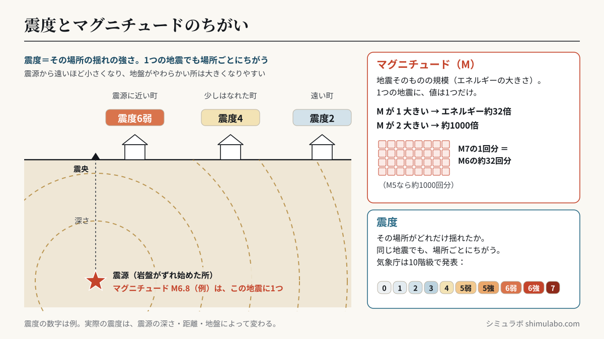
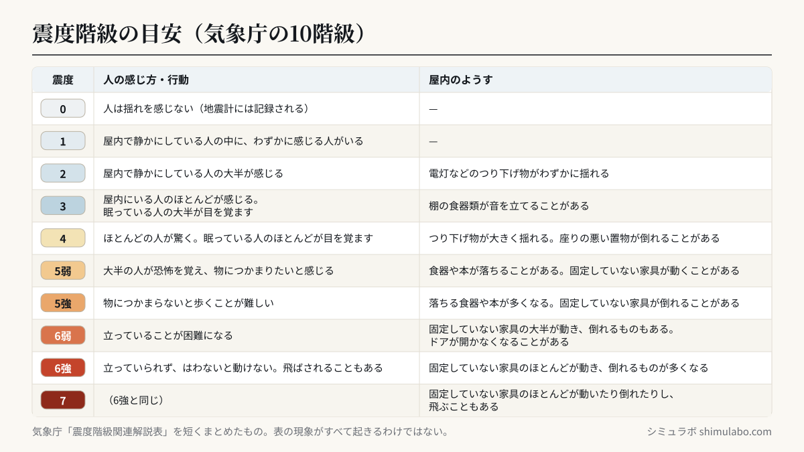

このメーターについて
日本では震度1以上の「有感地震」だけで年間およそ2,000回前後、体に感じない無感地震まで含めると年間10万回以上の地震が観測されています。つまり平均すれば数分に1回、日本のどこかが揺れている計算です。このメーターは、気象庁発表の地震情報を中継するオープンAPI（P2P地震情報）から最新100件の地震履歴を取得し、直近24時間・7日間の回数をその場で集計しています。
震度とマグニチュードの違い
震度は、その場所がどれだけ揺れたかを表す数字で、気象庁は震度0〜7の10段階（5と6は弱・強に分かれる）で発表します。マグニチュード（M）は、地震そのものの規模（放出されたエネルギーの大きさ）を表す数字です。1つの地震でマグニチュードは1つですが、震度は場所ごとに違います。マグニチュードが1大きくなると、エネルギーは約32倍、2大きくなると約1000倍になります。
| 震度 | マグニチュード | |
|---|---|---|
| 表すもの | その場所の揺れの強さ | 地震そのものの規模 |
| 1つの地震で | 場所ごとに違う | 1つ |
| 段階 | 0・1・2・3・4・5弱・5強・6弱・6強・7（10段階） | M1増えるとエネルギー約32倍 |






図はタップすると大きく表示されます。資料やSNSに使うときは、出典「シミュラボ」とページのURLを添えてください。
地震の情報が出る順番
大きな揺れを観測すると、気象庁はおよそ次の順に情報を発表します。①震度速報（震度3以上の地域）→ ②震源に関する情報（震源・マグニチュード・津波の心配の有無）→ ③震源・震度に関する情報（各地の震度）。このページの「最新の地震」は、届いた情報をまとめて表示しているため、発生直後は震源やマグニチュードが「調査中」になり、数分後に埋まっていきます。
地震のしくみを学ぶ
なぜ最初に小さくカタカタ揺れ、あとから大きくユサユサ揺れるのか（P波とS波）は地震の伝わり方シミュレーターで、ビルの高さで揺れ方が変わる理由は共振シミュレーターで、津波が岸で高くなる理由は津波シミュレーターで確かめられます。中学1年理科「火山と地震」の授業向けのまとめは理科の授業向けシミュにあります。
引用・転載について
本ページの計算結果・数値は、出典を明記いただければブログ・ニュース記事・SNS・社内資料への引用を歓迎します。事前連絡は不要です。
出典：シミュラボ「日本はいまも揺れている」 https://shimulabo.com/sims/jishin-live/Webでご利用の際は上記URLへのリンク設置をお願いします。
よくある質問
- いま起きた地震の震源と震度は？
- このページの先頭「最新の地震」に、気象庁が発表した最新の地震の発生時刻・震源・マグニチュード・深さ・最大震度・津波の情報・各地の震度を表示しています。「最新に更新」で読み直せます。
- 震度とマグニチュードの違いは？
- 震度はその場所の揺れの強さ（震度0〜7の10段階）、マグニチュードは地震そのものの規模です。1つの地震でマグニチュードは1つですが、震度は場所ごとに違います。
- この地震で津波の心配はありますか？
- 「最新の地震」の津波の情報に、気象庁の発表（津波の心配なし／若干の海面変動／調査中／津波注意報・警報）を表示しています。注意報・警報が出ているときは、ページを見るより先に海岸から離れて高い所へ避難してください。
- 地震データの出典は？
- 気象庁の地震情報を中継配信しているオープンAPI（P2P地震情報）から、ページを開くたびに最新の地震履歴を取得しています。
- 掲載されるのはどんな地震？
- 気象庁が発表した震度1以上の地震情報です。体に感じない無感地震を含めると、日本の地震回数はこの何倍にもなります。
- 速報として使えますか？
- いいえ。緊急地震速報の代わりにはなりません。防災情報は気象庁や自治体の公式情報を利用してください。